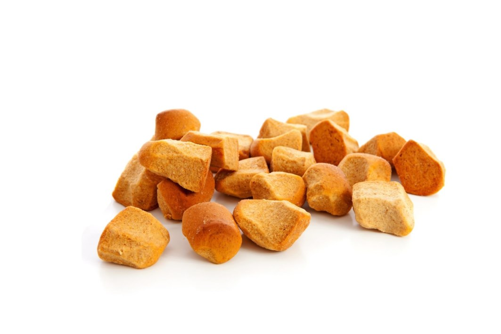

Ingredients
- 250 gram self raising flower
- 100 mL honey
- 4 cloves
- 1 tablespoon syrup
- 4 black peppercorns
- 1 teaspoon anise seeds
- 1 teaspoon grated nutmeg
- 3 teaspoons cinnamon powder
- 1 teaspoon cardamom powder
- 200 mL water
- oil or butter
- pinch of salt
Steps
- Preheat the oven at 170-175 degrees Celsius and cover the baking tray with baking paper.
- Mix all spices, flower and a pinch of salt in a bowl.
- Mix the honey and the syrup. Heat the honey a little bit in a saucepan if it is too hard.
- Heat the water. It doesn't have to boil! Add to the dough mixture and knead dough until it is smooth. If it is too dry you can add a little more water.
- Cut the dough in little cubes or shape them to little balls. Press them a bit flat and brush the pepernoten with warm water with a brush.
- Bake them in the oven for 15 to 20 minutes, until light brown and done. Take them out of the oven and let them cool down.